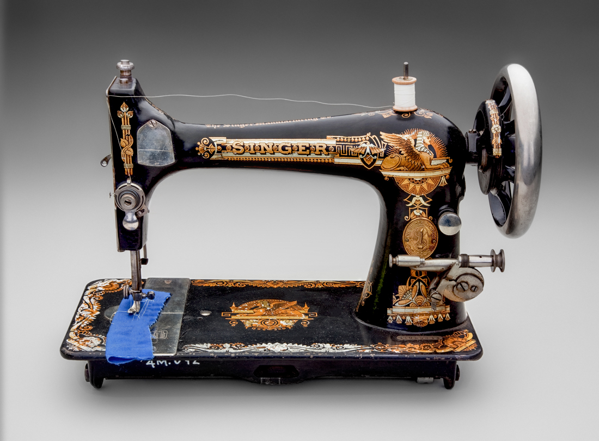
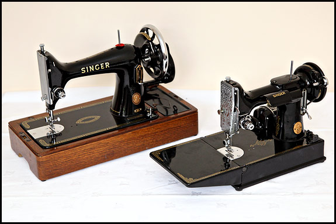
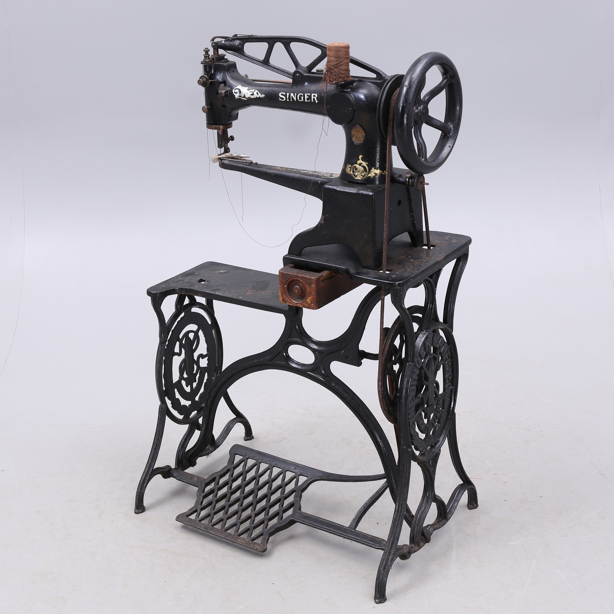

RETRO REVIEW
SINGER 99K VARIANTS
The Singer class 99 sewing machine was introduced in 1911 as a response to the growing demand for a lighter more portable domestic sewing machine that did not need to be used in a special table. In 1911 it had a list price in the U.K. of £6-10s-0d, although this was reduced to £5-4s-0d for cash purchases.
The 99 was a 3/4 size version of the established full size class 66. It used an identical mechanism and many of the same parts other than the basic body casting. The 99K stayed in production until around 1958.
The Singer 99 was a sturdy and reliable machine that was easy to use. It became very popular with occasional home users because at 22lbs (10kg), it was more manageable than ‘full size’ machines and it came in a storage case.

In 1921 the company introduced the option of a Singer electic motor making the 99K the first portable electric machine.
The 99 will sew most fabrics from fine delicates to denim or leather and will handle any normal household sewing task with ease. The machines have adjustable tension and stitch length controls. The 99K must always be mounted in some form of base because the underbed mechanism will not allow it to sit directly onto a table surface.
Early Singer 99’s were sold in wooden bases with a small compartment under the balance wheel to store accessories and bobbins etc. At first they had ‘Bentwood’ (polished plywood) covers which are now thought of as very desirable. Later models were still fitted in the same wooden bases, but these slid into a mock crocodile suitcase style case for transport or storage. By the end of its production life the Singer 99 was mounted in a plastic base with a clip-on plastic lid, or a soft plastic dust cover. Unfortunately the plastic bases frequently crack.
A few examples made around 1934 were designed as portable versions. These were fitted into a special steel base with an integral hinged extension table. They were housed in a smaller than normal rectanglar plywood case, which opened from the front.

Singer 99K
99K Portable #9439933
All versions of the 99 produce a good straight stitch with the later model 99K-31 also having a handy reverse feature.
The first model 99’s produced were hand cranks, which could be converted to electricity by the bolting on of an electric motor with either a knee controller or foot controller. Later 99K’s had factory fitted motors, with optional lights and foot controllers and smaller flywheels. The size of the flywheels changed over the decades, as did the motors and belts. Some models were fitted with knee instead of foot controllers, but these are not as popular. The design of the bobbin winders was also changed towards the end of its production life; along with the changing of the face plate from the ‘Egyptian’ scroll to the striated version in the mid 1950’s.
Perhaps the most obvious design change during the 99’s production was in the mechanism used for adjusting the stitch length. Early models utilised a screw in knob which gave no direct indication of what length had been set. This was later replaced by a lever with graduated scale and finally by a lever with a separate indicator and graduated scale. With these later lever type adjusters, fully raising the lever reversed the feed for back tacking.
The overall shape of the machine with its japanned black paintwork and gold decals remained the same, although the decals were ‘modernised’ over time. The feed dogs do not drop and so a feed cover plate is required for the use of the buttonholer or zigzag accessories, or for embroidery or darning etc. All versions take standard low-shank, screw-on feet and sewing machine needle sizes 130H/705H or 15x1 (2020).
During 1958 Singer introduced the 185 which was a re-styled version of the 99K-31 with reverse facility. Finished in beige paintwork with brown wheel, motor and plastic parts the 185K was mechanically identical to a 99. At the time it was considered more modern looking but nowadays the classic black class 99 models are once again thought more attractive.

Notable Singer 99K Variants
Model Features
99K-1 Small 3/4” tension discs
99K-10 Aluminum rather than iron head (not common)
99K-13 Electric portable with wooden cover or carrying case, knee control
99K-16 All metal (electric) portable with carrying case
99K-17 All metal (electric) portable with carrying case
99K-24 Electric portable - solid wheel, reverse, graduated tension.
99K-31 Electric portable - solid wheel, reverse, graduated tension.